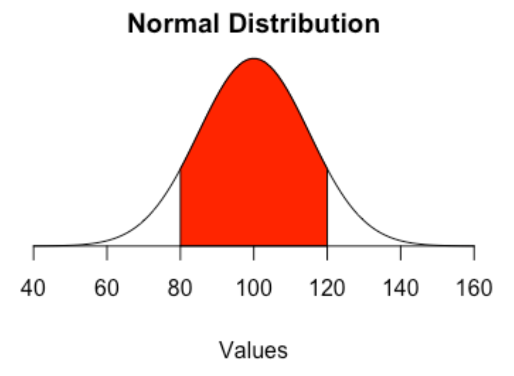

8 Significance tests
Now that we’ve worked with data a little, it’s time to start asking more probing questions of our data. One of the most probing questions we can ask – one that so few sports journalists ask – is if the difference between this thing and the normal thing is real.
We have a perfect natural experiment going on in sports right now to show how significance tests work. The NBA, to salvage a season and get to the playoffs, put their players in a bubble – more accurately a hotel complex at Disney World in Orlando – and had them play games without fans.
So are the games different from other regular season games that had fans?
To answer this, we need to understand that a significance test is a way to determine if two numbers are significantly different from each other. Generally speaking, we’re asking if a subset of data – a sample – is different from the total data pool – the population. Typically, this relies on data being in a normal distribution.
If it is, then we know certain things about it. Like the mean – the average – will be a line right at the peak of cases. And that 66 percent of cases will be in that red area – the first standard deviation.
A significance test will determine if a sample taken from that group is different from the total.
Significance testing involves stating a hypothesis. In our case, our hypothesis is that there is a difference between bubble games without people and regular games with people.
In statistics, the null hypothesis is the opposite of your hypothesis. In this case, that there is no difference between fans and no fans.
What we’re driving toward is a metric called a p-value, which is the probability that you’d get your sample mean if the null hypothesis is true. So in our case, it’s the probability we’d see the numbers we get if there was no difference between fans and no fans. If that probability is below .05, then we consider the difference significant and we reject the null hypothesis.
So let’s see. We’ll need a log of every game last NBA season. In this data, there’s a field called COVID, which labels the game as a regular game or a bubble game.
For this walkthrough:
Load the tidyverse.
library(tidyverse)And import the data.
logs <- read_csv("data/nbabubble.csv")Rows: 2118 Columns: 43
── Column specification ────────────────────────────────────────────────────────
Delimiter: ","
chr (7): Season, Conference, Team, HomeAway, Opponent, W_L, COVID
dbl (35): Game, TeamScore, OpponentScore, TeamFG, TeamFGA, TeamFGPCT, Team3...
date (1): Date
ℹ Use `spec()` to retrieve the full column specification for this data.
ℹ Specify the column types or set `show_col_types = FALSE` to quiet this message.First, let’s just look at scoring. Here’s a theory: fans make players nervous. The screaming makes players tense up, and tension makes for bad shooting. An alternative to this: screaming fans make you defend harder. So my hypothesis is that not only is the scoring different, it’s lower.
First things first, let’s create a new field, called totalpoints and add the two scores together. We’ll need this, so we’re going to make this a new dataframe called points.
points <- logs |> mutate(totalpoints = TeamScore + OpponentScore )Typically speaking, with significance tests, the process involves creating two different means and then running a bunch of formulas on them. R makes this easy by giving you a t.test function, which does all the work for you. What we have to tell it is what is the value we are testing, over which groups, and from what data. It looks like this:
t.test(totalpoints ~ COVID, data=points)
Welch Two Sample t-test
data: totalpoints by COVID
t = -5.232, df = 206.88, p-value = 4.099e-07
alternative hypothesis: true difference in means between group With Fans and group Without Fans is not equal to 0
95 percent confidence interval:
-11.64698 -5.27178
sample estimates:
mean in group With Fans mean in group Without Fans
222.8929 231.3523 Now let’s talk about the output. I prefer to read these bottom up. So at the bottom, it says that the mean number of points score in an NBA game With Fans is 222.89. The mean scored in games Without Fans is 231.35. That means teams are scoring almost 8.5 points MORE without fans on average.
But, some games are defenseless track meets, some games are defensive slugfests. We learned that averages can be skewed by extremes. So the next thing we need to look at is the p-value. Remember, this is the probability that we’d get this sample mean – the without fans mean – if there was no difference between fans and no fans.
The probability? 4.099e-07 or 4.099 x 10 to the -7 power. Don’t remember your scientific notation? That’s .00000004099. The decimal, seven zeros and the number.
Remember, if the probability is below .05, then we determine that this number is statistically significant. We’ll talk more about statistical significance soon, but in this case, statistical significance means that our hypothesis is correct: points are different without fans than with. And since our hypothesis is correct, we reject the null hypothesis and we can confidently say that bubble teams are scoring more than they were when fans packed arenas.
8.1 Accepting the null hypothesis
So what does it look like when your hypothesis is wrong?
Let’s test another thing that may have been impacted by bubble games: home court advantage. If you’re the home team, but you’re not at home, does it affect you? It has to, right? Your fans aren’t there. Home and away are just positions on the scoreboard. It can’t matter, can it?
My hypothesis is that home court is no longer an advantage, and the home team will score less relative to the away team.
First things first: We need to make a dataframe where Team is the home team. And then we’ll create a differential between the home team and away team. If home court is an advantage, the differential should average out to be positive – the home team scores more than the away team.
homecourt <- logs |> filter(is.na(HomeAway) == TRUE) |> mutate(differential = TeamScore - OpponentScore)Now let’s test it.
t.test(differential ~ COVID, data=homecourt)
Welch Two Sample t-test
data: differential by COVID
t = 0.36892, df = 107.84, p-value = 0.7129
alternative hypothesis: true difference in means between group With Fans and group Without Fans is not equal to 0
95 percent confidence interval:
-2.301628 3.354268
sample estimates:
mean in group With Fans mean in group Without Fans
2.174047 1.647727 So again, start at the bottom. With Fans, the home team averages 2.17 more points than the away team. Without fans, they average 1.64 more.
If you are a bad sportswriter or a hack sports talk radio host, you look at this and scream “the bubble killed home court!”
But two things: first, the home team is STILL, on average, scoring more than the away team on the whole.
And two: Look at the p-value. It’s .7129. Is that less than .05? No, no it is not. So that means we have to accept the null hypothesis that there is no difference between fans and no fans when it comes to the difference between the home team and the away team’s score.
Now, does this mean that the bubble hasn’t impacted the magic of home court? Not necessarily. What it’s saying is that the variance between one and the other is too large to be able to say that they’re different. It could just be random noise that’s causing the difference, and so it’s not real. More to the point, it’s saying that this metric isn’t capable of telling you that there’s no home court in the bubble.
We’re going to be analyzing these bubble games for years trying to find the true impact of fans.